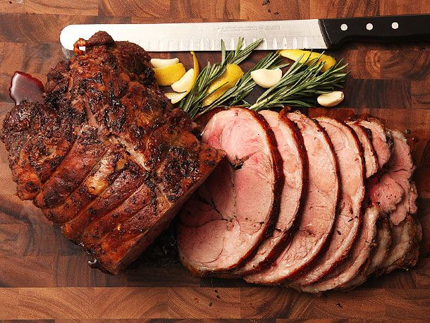

Lamb Leg Roast with Anchovie and Rosemary

Why not? It takes less then two and a half hours. Have fun or just suffer through, but either way be mildly impressed.
- 1 leg of lamb, deboned (look up a youtube or something)
- 1 bunch of fresh rosemary, cleaned (like half an ounce)
- 4 filets of spanish anchovie
- 1 C good olive oil
- Kosher salt
- Butcher twine
- Preheat oven to 375fs
- Once the leg of lamb is deboned, remove access fat pockets and any visible silver skin
- In a food processor add rosemary and anchovies. Add just enough olive oil to allow the ingredients to form a paste.
- Add the rest of the olive oil
- Lay the lamb flat and season generously. Then rub with the oil mixture
- Roll the lamb tightly to form a log
- Use the twine to truss the lamb, maintaining a uniform log
- Season the outside generously then rub down with the oil
- Use a roasting pan with grate inserted to keep the lamb off the bottom of the pan
- Put lamb in the hot oven for about an hour and 45 minutes, until the internal tempature reads 130
- From here, you can rest for 10-20 minutes and slice and serve or cool it completely and slice steaks off of the roast and in a hot pan sear in some oil with a little garlic and herbs to finish